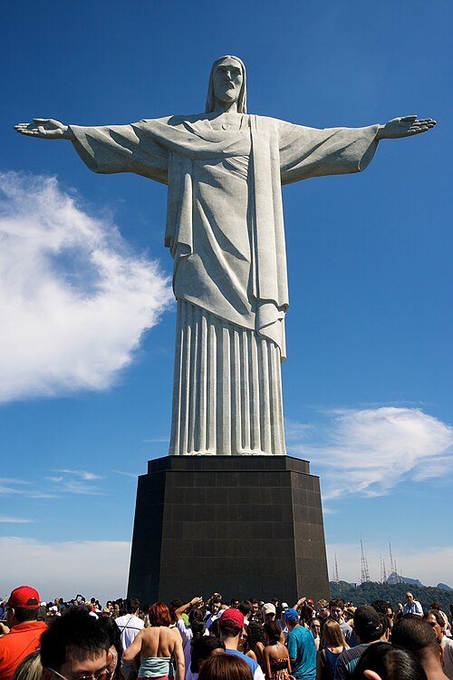
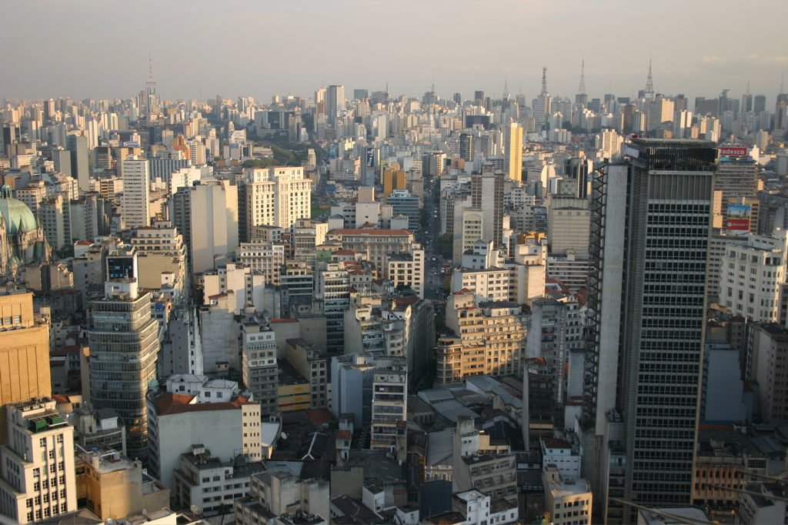
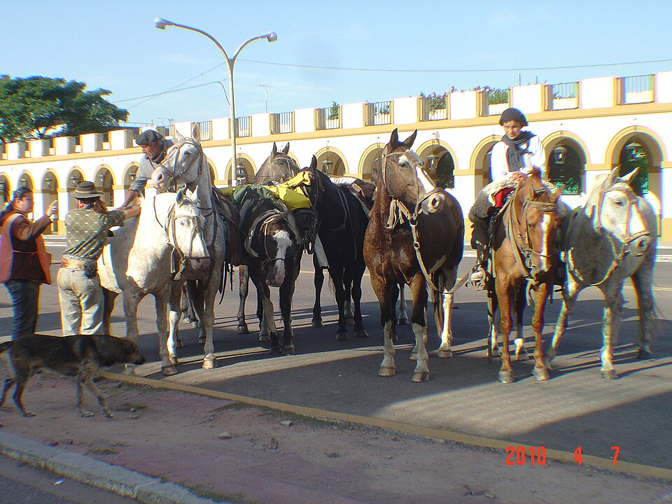
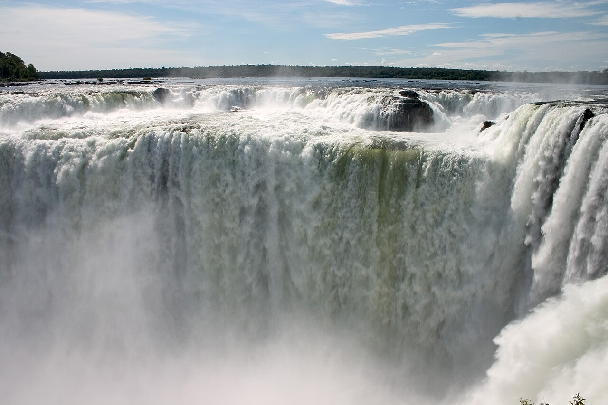
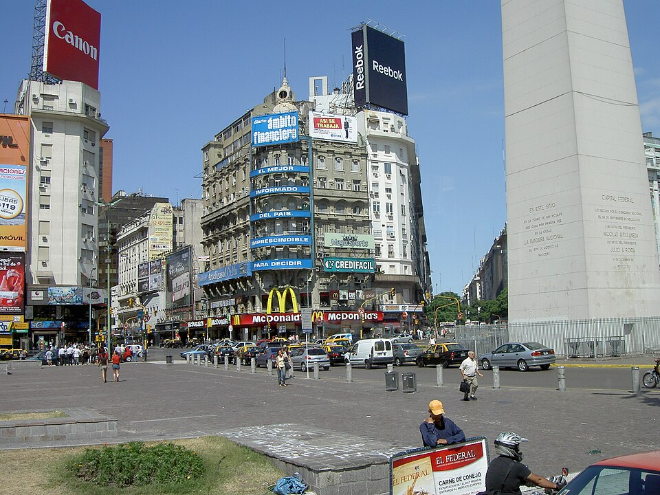

Страни в Южна Америка: Бразилия и Аржентина
Ще научиш: да характеризираш Бразилия и Аржентина по съществени признаци — положение, природа, население, стопанство и градове — и да ги сравняваш.
„Градът, построен насред платото“
Бразилия е държава с огромни брегове и най-големи градове на океана. И все пак преди време тя построила съвсем нов град насред пустото плато във вътрешността и го направила своя столица. Защо?
Твоята задача, детективе: прочети досиетата, разгледай картата и схемата и събери 4 улики.
Положение, граници и големина
Бразилия се намира в източната част на Южна Америка. Тя граничи с всички страни в континента, освен с Чили и Еквадор. На изток я мие Атлантическият океан.
Страната заема почти половината от територията на континента — около 8,5 млн. кв. км. По площ е на пето място в света.

Природа
Огромна част от страната заемат екваториалните гори в . В са саваните.
Амазонка и притоците ѝ играят важна роля в живота на страната.
В Бразилската планинска земя са най-големите находища на желязна руда в континента. Страната има и големи запаси от , нефт и природен газ.
Население
В Бразилия живеят около 212 млн. души (по учебника). Това е най-многолюдната страна в континента и е на пето място в света.
Хората са разпределени неравномерно. Повечето живеят по крайбрежието, в многомилионни градове.
Етническият състав е разнообразен (виж фигурата по-долу). Затова в бразилската култура се преплитат португалски, индиански и африкански елементи.
Почти всички бразилци са християни, предимно католици. Официалният език е португалският. Страната е , управлявана от президент и Национален конгрес (народно събрание).
Стопанство
По стопанско развитие Бразилия е сред водещите страни в света.
Силно развито е производството на метали, транспортни машини и електроника. Силно развити са и земеделието (кафе, какао, банани, захарна тръстика, зърнени и цитрусови култури) и добивът и преработката на полезни изкопаеми.
В страната има над 4 хил. летища, а по дължина на речните и автомобилните пътища е сред първите в света.
Градове
Най-големите градски образувания са Сао Пауло (около 22 млн. души заедно с предградията) и Рио де Жанейро (около 13 млн. с предградията).
Други големи градове са Белу Оризонти и Порту Алегри (около 4–5 млн. души с предградията) и Бразилия (около 3,8 млн.).
Бразилия е столицата на страната от 1960 г.

Етнически състав на населението
Докосни част от лентата, за да видиш групата и процента. Опитай всичките 6 части.
Избери част
Тук ще се появи групата и процентът.
Числата са от учебника. В Бразилия има много смесено население, а в Аржентина по-голямата част имат европейски произход.
Положение, граници и големина
Аржентина е разположена в югоизточната част на Южна Америка. Граничи с Чили, Боливия, Парагвай, Бразилия и Уругвай, а на изток — с Атлантическия океан.
По площ — около 2,8 млн. кв. км — е на второ място в континента и на осмо място в света.
Природа
Природният облик се определя от три неща: равнините на , полупустинята и върховете на Андите.
Климатът е благоприятен за развитието на земеделие.
е най-важният воден път.
В недрата има нефт, природен газ и рудни изкопаеми.

Население
В Аржентина живеят над 45 млн. души — трето място в континента.
Населението е разпределено неравномерно. Най-гъсто е населено атлантическото крайбрежие, а най-рядко — Патагония и Андите.
Около 85% от хората имат европейски произход (фиг. 1). Според учебника над 90% от населението са католици (по-нови изследвания дават по-малък дял — виж „За родителя“). Официалният език е испанският.
Аржентина е президентска република.
Стопанство
Аржентина е сред най-развитите страни в континента.
По добив на природен газ е на първо място в континента. Силно развито е производството на метали, машини, нефтопродукти, химикали и текстил.
По производство и износ на храни (пшеница, царевица, слънчоглед, месо) е сред водещите в света.
Почти половината от обработващите дейности са съсредоточени в столицата. Силно развити са транспортът и туризмът.

Градове
Столица и най-голям град е Буенос Айрес — около 16,2 млн. души заедно с предградията.
Други по-големи градове са Кордоба (около 1,6 млн.) и Росарио (около 1,3 млн.).

Нарастване на населението на Сао Пауло и Буенос Айрес
Докосни точка на линията, за да видиш година и брой жители. Опитай поне 6 точки.
Избери точка
Тук ще се появи годината и броят жители.
Стойностите са приблизителни — прочетени от графиката в учебника, в милиони души. Данните на ООН за градските агломерации са малко по-различни (виж „За родителя“). Важното е тенденцията: и двата града растат, но Сао Пауло расте по-бързо.
Карта на Бразилия и Аржентина
Избери държава с бутоните, после докосни град, река, релеф или съседна страна. Отвори поне 10 обекта за значка.
Избери обект
Тук ще се появи кратко досие.
Опростена карта за учебни цели. Местата на реките и релефа са приблизителни.
Сравни двете страни — по какво си приличат и по какво се различават?
Докосни ред, за да го разгънеш. Ще видиш дали е ✓ Прилика или ⇄ Разлика. Разгледай всички редове.
Бразилия или Аржентина?
10 твърдения. Докосни страната, за която се отнася. Отговаряш веднага и виждаш обратна връзка.
Защо столицата се мести?
Мини през стъпките и гледай как столицата на Бразилия „пътува“ от брега във вътрешността.
Стъпка 1
Докосни „Следваща стъпка“.
Избери си роля
Напиши кратък текст от 3 изречения.
В какви области България може да си сътрудничи с двете страни?
Избери поне 2 области и обясни с 2–3 изречения защо.
България може да си сътрудничи с Бразилия и Аржентина в земеделието, защото и двете страни са сред водещите производители на храни — можем да обменяме опит и техники. В туризма можем да привличаме туристи един от друг: бразилци и аржентинци да идват в България, а българи — в Игуасу и Рио. А чрез образованието и спорта — ученически и студентски обмени и футболни приятелски мачове — децата ни ще се опознаят.
Твоят отговор може да е различен — важно е да имаш причина.
На лист хартия
Избери едно от двете:
- Знамената на Бразилия и Аржентина. Оцвети ги и до всяко напиши столицата и езика на страната.
- Контурна карта: нарисувай контурите на двете страни и нанеси градовете Бразилия, Сао Пауло, Рио де Жанейро, Буенос Айрес, Кордоба и Росарио. Надпиши Амазонка и Парана.
Тайни от архива
Words of the day
Докосни 🔊, за да чуеш думата и изречението.
¡Hola! 🇪🇸 Бонус на испански
Така говорят в Аржентина (а в Бразилия говорят португалски).
Отговори с думи
Напиши кратък отговор, после натисни „Готово“, за да видиш примерен отговор, и сам се оцени.
Изпитът на детектива
3 нива по 3 въпроса. Всяко ниво отключва следващото. Грешните въпроси се връщат в края на нивото.
🃏 Флашкарти
Докосни картата, за да я обърнеш.
Защо Бразилия построила нова столица насред платото?
Събери 4-те улики, за да отключиш разкриването.
Твоите значки
Най-важното от урока
- Бразилия — положение: в източната част на Южна Америка; граничи с всички страни в континента, освен Чили и Еквадор; на изток е Атлантическият океан. Заема почти половината от континента — 8,5 млн. кв. км — и е на 5-о място в света по площ.
- Бразилия — природа: екваториални гори в Амазонската низина, савани в Бразилската планинска земя; Амазонка и притоците ѝ са важни за страната. Най-големите находища на желязна руда в континента; още боксит, нефт и природен газ.
- Бразилия — население: около 212 млн. — най-много в континента и 5-о място в света; живеят главно по крайбрежието. Култура с португалски, индиански и африкански елементи. Предимно католици; официален език — португалски; република с президент и Национален конгрес.
- Бразилия — стопанство и градове: метали, транспортни машини, електроника, земеделие (кафе, какао, банани, захарна тръстика, зърнени и цитрусови култури), над 4 хил. летища. Най-големи градове: Сао Пауло (22 млн. с предградията) и Рио де Жанейро (13 млн.); столица е Бразилия (3,8 млн.) от 1960 г.
- Аржентина — положение: в югоизточната част на континента; граничи с Чили, Боливия, Парагвай, Бразилия и Уругвай и с Атлантическия океан. Площ 2,8 млн. кв. км — 2-ро място в континента, 8-о в света.
- Аржентина — природа: равнини на Пампата, полупустиня Патагония, върхове на Андите; климат, благоприятен за земеделие; най-важен воден път е река Парана; нефт, природен газ и рудни изкопаеми.
- Аржентина — население: над 45 млн. — 3-то място в континента; най-гъсто е населено атлантическото крайбрежие, най-рядко — Патагония и Андите. Около 85% са с европейски произход; официален език — испански; президентска република.
- Аржентина — стопанство и градове: 1-во място в континента по добив на природен газ; метали, машини, нефтопродукти, химикали, текстил; сред водещите по износ на храни (пшеница, царевица, слънчоглед, месо); силни транспорт и туризъм. Столица и най-голям град е Буенос Айрес (16,2 млн.); още Кордоба (1,6 млн.) и Росарио (1,3 млн.).
📄 Текст за копиране (Google Docs / печат)
👤 За родителя: какво е добавено и източници
Извън учебника в този урок са добавени: интерактивната карта със съседи, реки, релеф и градове (местата са приблизителни); интерактивната таблица за сравнение (задача 2); играта „Бразилия или Аржентина?“; схемата „Защо столицата се мести?“; ролите „Журналист при гаучо“ и „Кореспондент в Сао Пауло“; задача 3 с избор на области и примерен отговор; творческата задача; английските и испанските думи; 5-те факта в „Знаеш ли, че…“; снимките; тестът и флашкартите. Съдържанието на досиетата и двете фигури са по учебника (Анубис, стр. 30–31) и преразказани със свои думи.
Числата от учебника остават водещи (по тях се пита в клас). Проверка към днес:
- Население на Бразилия: учебникът — около 212 млн. Преброяването от 2022 г. (IBGE) отчита около 203,1 млн., а официалната оценка за средата на 2022 г. е около 210,9 млн.; проекциите са около 214 млн. за 2026 г. Числата са близки до учебниковите.
- Население на Аржентина: учебникът — над 45 млн. Преброяването от 2022 г. (INDEC) дава около 45,9 млн. (оценка към средата на 2022 г. — около 46,2 млн.). Съвпада.
- Етнически състав на Бразилия (фиг. 1): учебникът — европейци 38%, смесено 38%, африканци 6%, други 18%. Преброяването от 2022 г. използва други категории и дава: „парду“ (смесени) 45,3%, бели 43,5%, черни 10,2%, коренни около 0,8%, азиатци около 0,4%. Разликата е съществена (особено при дела на смесените и белите), защото категориите и методът са различни. Числата в урока са от учебника.
- Етнически състав на Аржентина: при преброяванията в Аржентина не се пита за „раса“, затова дялът от около 85% европейци е приблизителна оценка, която се повтаря в справочниците. Не открихме официално число, с което да го сверим.
- Католици в Аржентина: учебникът казва „над 90%“. Проучване на CONICET от 2019 г. дава около 62,9% католици (при 76,5% през 2008 г.), като около 15% са евангелисти и около 19% без религия. Затова в урока числото е посочено като „по учебника“. Това е значителна разлика.
- Белу Оризонти и Порту Алегри: редовете в учебника не са напълно четими на снимката. Не открихме надеждно потвърждение за населението на техните агломерации, затова в урока е записано общо „около 4–5 млн. души с предградията“. За сведение: самите общини по преброяването от 2022 г. имат около 2,3 млн. (Белу Оризонти) и около 1,3 млн. (Порту Алегри).
- Сао Пауло и Буенос Айрес (фиг. 2): графиката в урока е прочетена от учебника и е приблизителна. Не успяхме да сверим пълния ред 1950–2015 за двата града. Намерихме само данни на ООН (World Urbanization Prospects, издание 2025) за Сао Пауло: около 13,0 млн. (1980), 15,3 млн. (1990), 16,7 млн. (2000), 18,2 млн. (2010) и 18,7 млн. (2015). Те са по-ниски от числата в учебника (около 22 млн.), защото различните издания на ООН и различните източници очертават границите на агломерацията по различен начин. За Буенос Айрес не намерихме сравнима серия.
- Бразилия (столица): строежът е започнал през 1956 г., а официалното откриване е на 21 април 1960 г. (около 41 месеца). Градът не е бил напълно завършен при откриването. Идеята е била да се насърчи развитието на вътрешността на страната.
- Световни първенства по футбол: Бразилия — 5 титли, Аржентина — 3 (последната през 2022 г.). Фактът е „към 2022 г.“.
- IBGE: Census 2022 — цвят/раса
- IBGE: население на Бразилия, Census 2022
- INDEC (през BAE Negocios): Censo 2022 — население на Аржентина
- Buenos Aires Times: проучване на CONICET за религията (2019)
- ООН (WUP 2025), през Prefeitura de São Paulo: най-големи агломерации
- EBSCO: Brazil builds a new capital city
- Natural Earth — данни за контурите на държавите (обществено достояние)
- Снимките са от Wikimedia Commons. Авторът и лицензът са под всяка снимка.